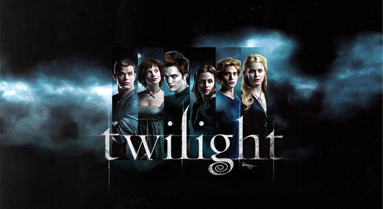

The Moon does not emit its own light, shining instead by reflecting sunlight. Depending on the relative positions of the Earth, Sun and Moon, varying amounts of the lunar surface appear to be illuminated.
Moon phases for May 2019
| Date | Phase | Visible | Age |
|---|---|---|---|
| 1 May | Waning crescent | Visible: 12% ↓ | Age: 26.24 days |
| 2 May | Waning crescent | Visible: 12% ↓ | Age: 26.24 days |
| 3 May | Waning crescent | Visible: 12% ↓ | Age: 26.24 days |
| 4 May | Waning crescent | Visible: 12% ↓ | Age: 26.24 days |
| 5 May | Waning crescent | Visible: 12% ↓ | Age: 26.24 days |
| 6 May | Waning crescent | Visible: 12% ↓ | Age: 26.24 days |
| 7 May | Waning crescent | Visible: 12% ↓ | Age: 26.24 days |
| 8 May | Waning crescent | Visible: 12% ↓ | Age: 26.24 days |
| 9 May | Waning crescent | Visible: 12% ↓ | Age: 26.24 days |
| 10 May | Waning crescent | Visible: 12% ↓ | Age: 26.24 days |
| 11 May | Waning crescent | Visible: 12% ↓ | Age: 26.24 days |
| 12 May | Waning crescent | Visible: 12% ↓ | Age: 26.24 days |
| 13 May | Waning crescent | Visible: 12% ↓ | Age: 26.24 days |
| 14 May | Waning crescent | Visible: 12% ↓ | Age: 26.24 days |
| 15 May | Waning crescent | Visible: 12% ↓ | Age: 26.24 days |
| 16 May | Waning crescent | Visible: 12% ↓ | Age: 26.24 days |
| 17 May | Waning crescent | Visible: 12% ↓ | Age: 26.24 days |
| 18 May | Waning crescent | Visible: 12% ↓ | Age: 26.24 days |
| 19 May | Waning crescent | Visible: 12% ↓ | Age: 26.24 days |
| 20 May | Waning crescent | Visible: 12% ↓ | Age: 26.24 days |
| 21 May | Waning crescent | Visible: 12% ↓ | Age: 26.24 days |
| 22 May | Waning crescent | Visible: 12% ↓ | Age: 26.24 days |
| 23 May | Waning crescent | Visible: 12% ↓ | Age: 26.24 days |
| 24 May | Waning crescent | Visible: 12% ↓ | Age: 26.24 days |
| 25 May | Waning crescent | Visible: 12% ↓ | Age: 26.24 days |
| 26 May | Waning crescent | Visible: 12% ↓ | Age: 26.24 days |
| 27 May | Waning crescent | Visible: 12% ↓ | Age: 26.24 days |
| 28 May | Waning crescent | Visible: 12% ↓ | Age: 26.24 days |
| 29 May | Waning crescent | Visible: 12% ↓ | Age: 26.24 days |
| 30 May | Waning crescent | Visible: 12% ↓ | Age: 26.24 days |
| 31 May | Waning crescent | Visible: 12% ↓ | Age: 26.24 days |
Above you can see our calendar of Moon phases for may 2019. The name of a current phase, an approximate percent of an illuminated surface of the Moon visible from the Earth, and Moon's age (days) are also provided.
Sources :
Interesting !
Do you want to know who you are from the popular movie Twilight?
TAP HERE